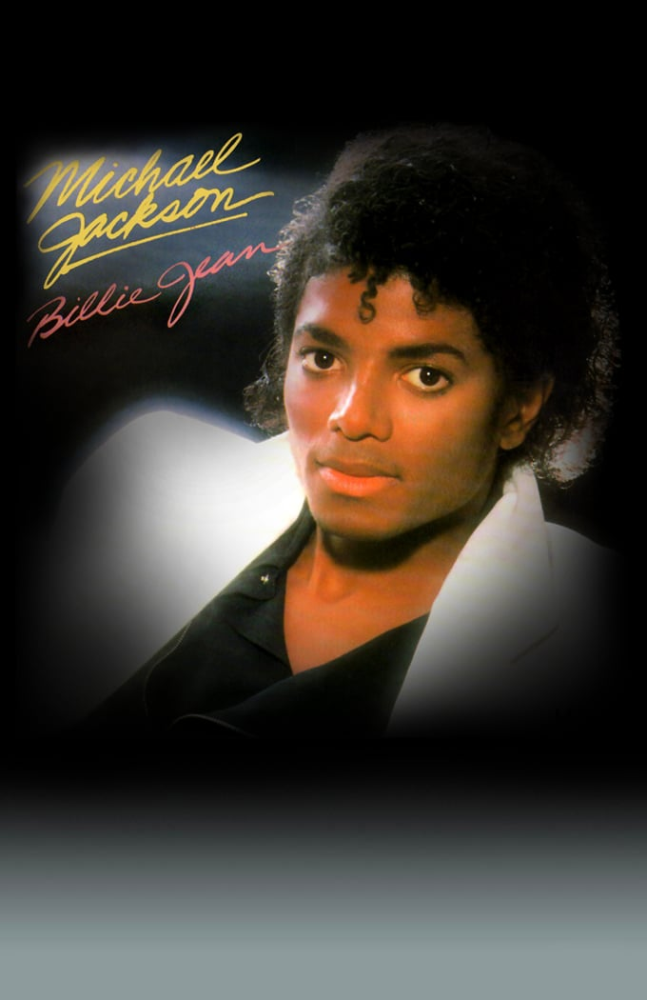

Самые популярные музыкальные исполнители
Майкл Джексон
**Майкл Джозеф Джексон** (1958–2009) — американский певец, автор песен и танцор. Известный как "Король поп-музыки", он оказал огромное влияние на музыкальную индустрию. Его альбом "Thriller" является самым продаваемым альбомом всех времен.
The Beatles
**The Beatles** — британская рок-группа, образованная в 1960 году в Ливерпуле. Их состав включал Джона Леннона, Пола Маккартни, Джорджа Харрисона и Ринго Старра. The Beatles стали символом музыкальной революции 1960-х годов. Их альбомы "Sgt. Pepper's Lonely Hearts Club Band", "Revolver" и "Abbey Road" считаются одними из величайших в истории музыки.
Элвис Пресли
**Элвис Аарон Пресли** (1935–1977) — американский певец и актер, известный как "Король рок-н-ролла". Он стал популярным в середине 1950-х годов благодаря своим хитам "Heartbreak Hotel", "Hound Dog" и "Jailhouse Rock". Элвис Пресли оказал огромное влияние на развитие рок-музыки и популярной культуры.
Мадонна
**Мадонна Луиза Чикконе** (род. 1958) — американская певица, автор песен, актриса и предприниматель. Она известна своими инновационными музыкальными видео и живыми выступлениями. Мадонна является одной из самых успешных артисток в истории поп-музыки, её хиты включают "Like a Virgin", "Vogue" и "Hung Up".
Бейонсе
**Бейонсе Жизель Ноулз-Картер** (род. 1981) — американская певица, автор песен и актриса. Она начала свою карьеру в группе Destiny's Child, а затем успешно продолжила сольную карьеру. Бейонсе известна своими мощными вокальными данными и энергичными выступлениями. Её хиты включают "Crazy in Love", "Single Ladies" и "Formation".
Фредди Меркьюри
**Фредди Меркьюри** (1946–1991) — британский певец, автор песен и лидер группы Queen. Он известен своими невероятными вокальными данными и харизмой на сцене. Хиты Queen, такие как "Bohemian Rhapsody", "We Will Rock You" и "Somebody to Love", стали классикой рок-музыки.
Леди Гага
**Стефани Джоанн Анджелина Джерманотта** (род. 1986), известная как Леди Гага, — американская певица, автор песен и актриса. Она известна своими экстравагантными образами и инновационными музыкальными видео. Её хиты включают "Poker Face", "Bad Romance" и "Shallow".
Принс
**Принс Роджерс Нельсон** (1958–2016) — американский певец, автор песен и мультиинструменталист. Он известен своим уникальным стилем, который сочетает в себе элементы фанк, рок и поп-музыки. Принс выпустил множество хитов, включая "Purple Rain", "Kiss" и "When Doves Cry".
Боб Дилан
**Боб Дилан** (род. 1941) — американский певец, автор песен и поэт. Он считается одним из величайших авторов песен всех времен. Его тексты часто содержат политические и социальные комментарии. Хиты Боба Дилана включают "Blowin' in the Wind", "Like a Rolling Stone" и "The Times They Are a-Changin'".
Ариана Гранде
**Ариана Гранде-Бутера** (род. 1993) — американская певица и актриса. Она начала свою карьеру на телевидении, а затем добилась успеха как поп-исполнитель. Ариана Гранде известна своим мощным вокалом и хитами, такими как "Problem", "Thank U, Next" и "7 rings".